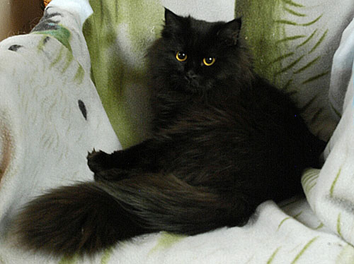
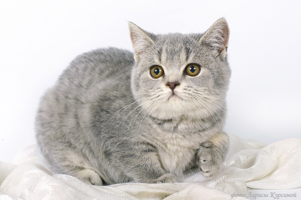
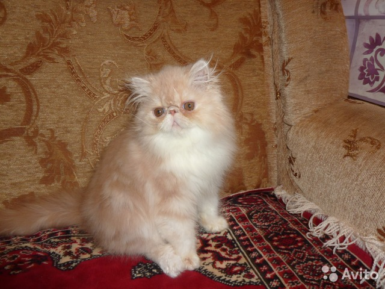
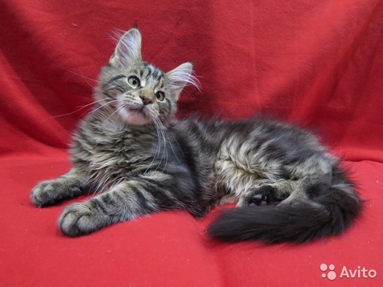
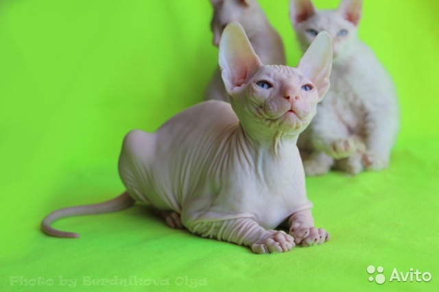
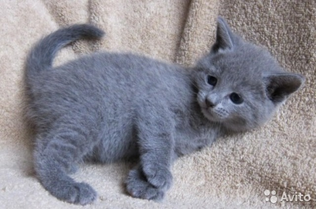
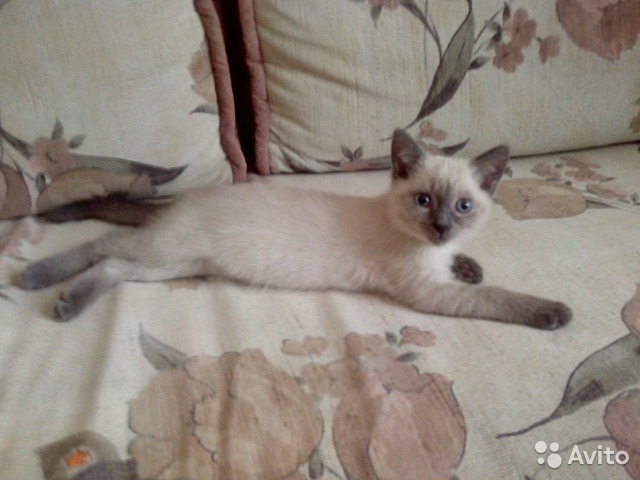
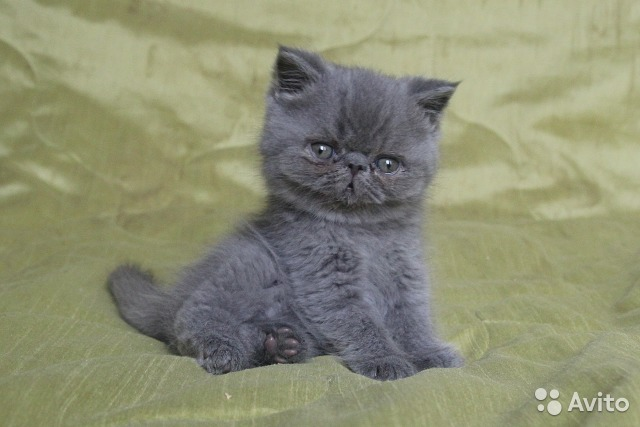
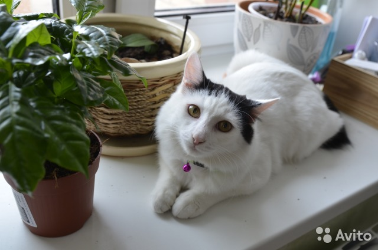
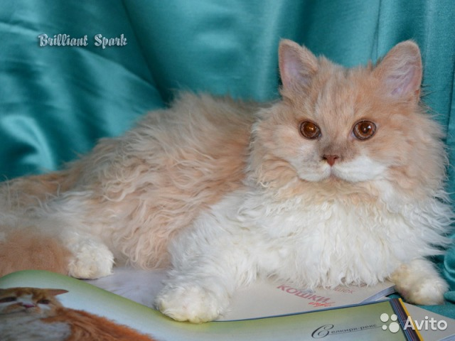

Сибирская кошка
15000 руб
Описание:
Возраст 3 мес. К лотку приучена.
В еде неприхотлива, уже распробовали охоту на мышей.
Очень ласковая девчонка.
Живет в Кирове, но доставка возможна в любой город!
К зиме появляется знатный воротник и пушистые штанишки на задних лапках.
Шерсть не сваливается.

Британская кошка
8000 руб14000 руб
Описание:
Мальчик. Окрас голубой. Здоровье - проверены, имеют сертификат,
документы о происхождении. Доставка в любой регион мира по согласованию.

Перситская кошка
8000 руб
Описание:
Продаеться кот. Окрас мраморный. Ему 4 месяца.
Приучен к лотку. Привит, все документы есть.

Мейн-кун
30000 руб
Описание:
Мейн-кун окраса MCO n22 , 3,5 месяца.
Очень хороших кровей,в прекрасном породном типе,
имеет отличный постав ушей. Есть документы WCF.
Игривый, общительный, умный и безумно ласковый.
Приучен к лотку и когтеточке.

Донской сфинкс
6000 руб
10000 руб
Описание:
Котенок донского сфинкса. В качестве домашнего любимца. Не для разведения.
Котенок очень ласковый, общительный. Приучен к лотку и когтеточке.
Питается качественным беззерновым кормом.
Голубые глазки и горячая, бархатистая шкурка

Русская голубая
5000 руб
8000 руб
Описание:
Очень, очень ласковый и ко всему приучены котенок.
Кушают сухой корм и котлетки.
Прививки все сделаны, мед.паспорт с осмотром вет.врача имеються.

Сиамская
5000 руб
Описание:
Мальчик. Настоящие породистые родители, можно посмотреть у нас дома.
Родители очень красивые, спокойные, ласковые, ориентированы на человека.

Экзотическая
8000 руб
Описание:
Продается голубой котик, плюшевый экзот,
13.11 будет 2 месяцы, уже кушает сам и ходит в лоток.
Коты не метят по всей линии! от титулованных родителей.
Котик по характеру очень дружелюбный ищет сам общение и мурчит.

Японский бобтейл
8000 руб
Описание:
Японские бобтейлы знамениты как "коты счастья",
Они любят разговаривать и умеют издавать разные мяу-звуки.
Шлун и забияка, очень игривый и активный парень,
выходит встречать к двери и провожает на работу,
спит в ногах, хотя днем любит поваляться в кресле.

Корниш-рекс
8000 руб
12000 руб
Описание:
Ласковый и красивый котенок. корниш-рекс.
Привязан к людям,любит ласкаться и разговаривать.
Приучен к лотку, все документы есть.